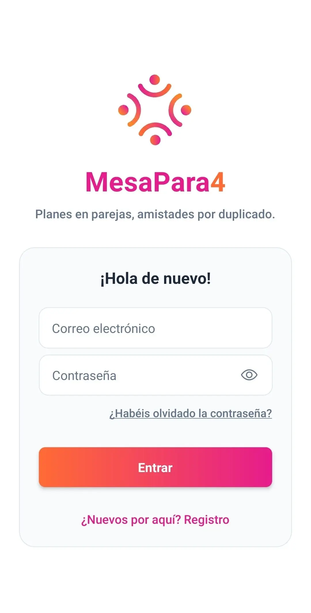
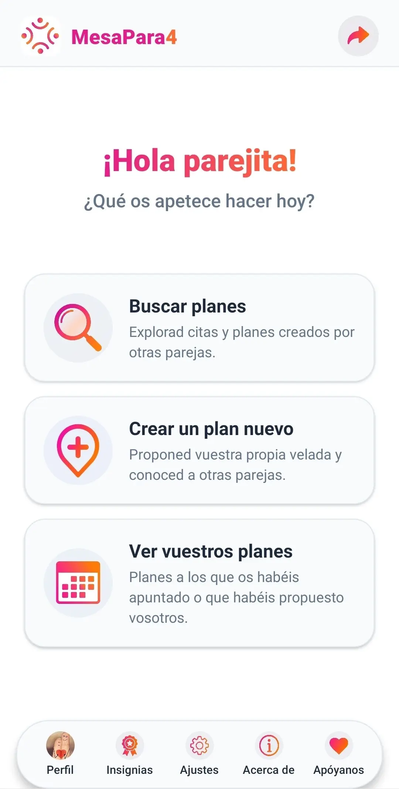
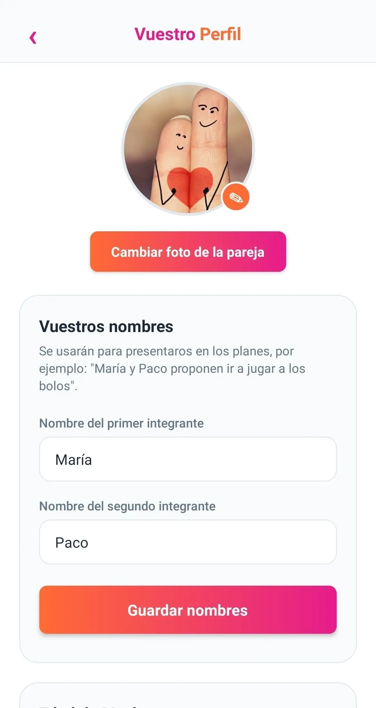
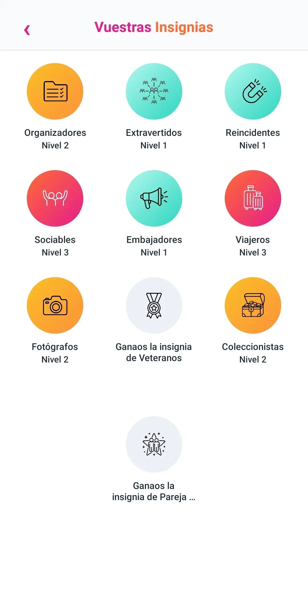
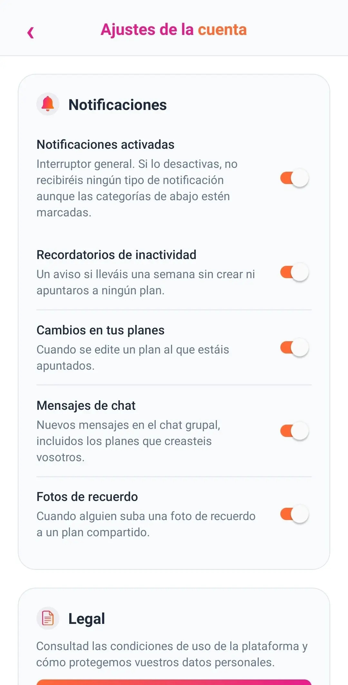
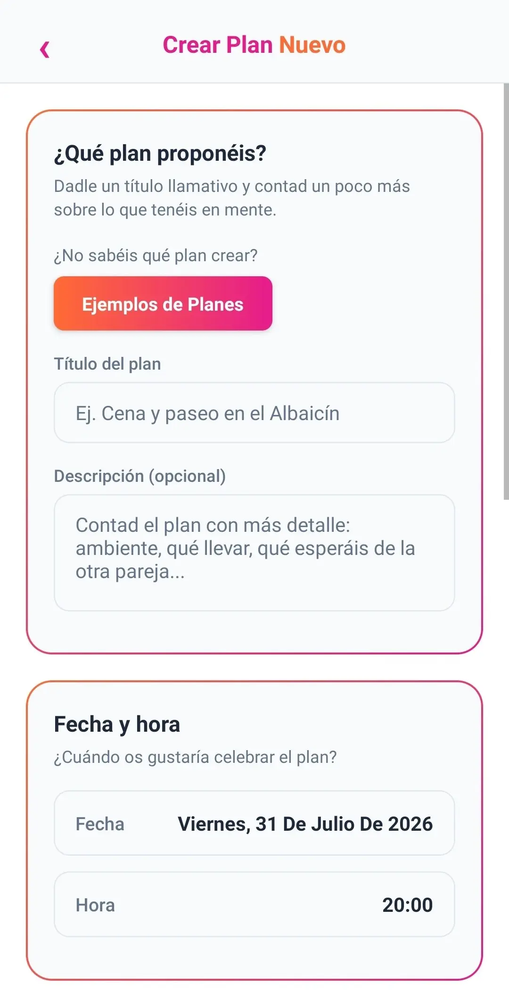
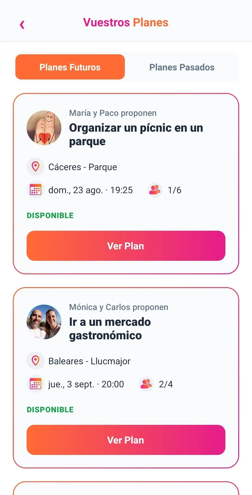
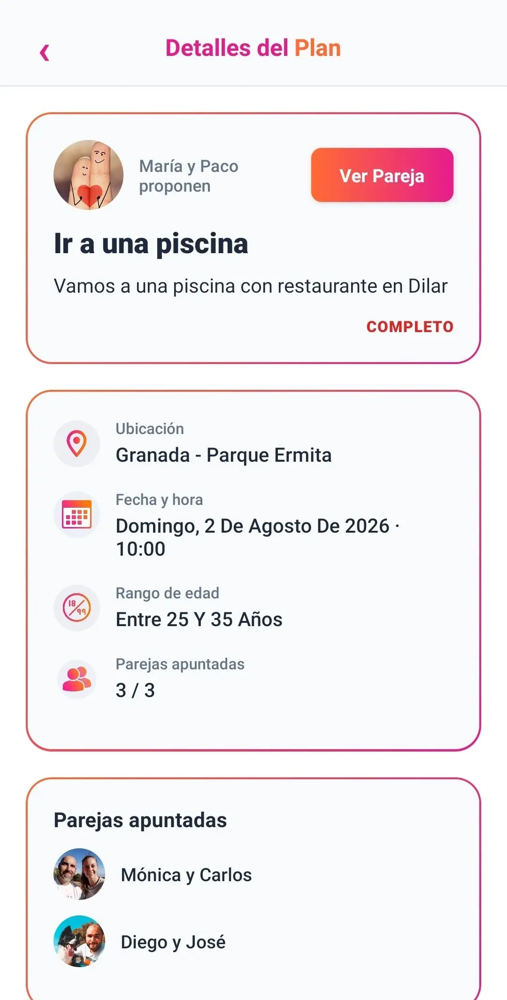
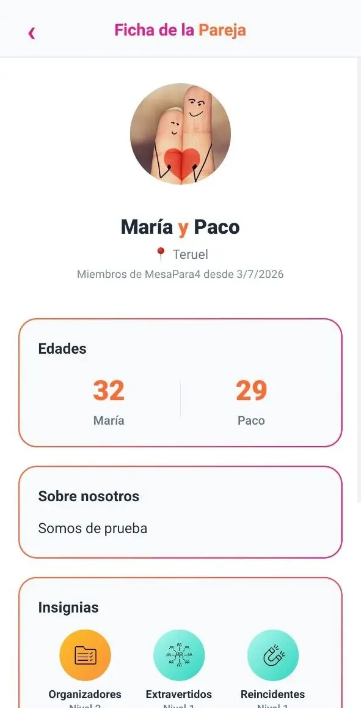
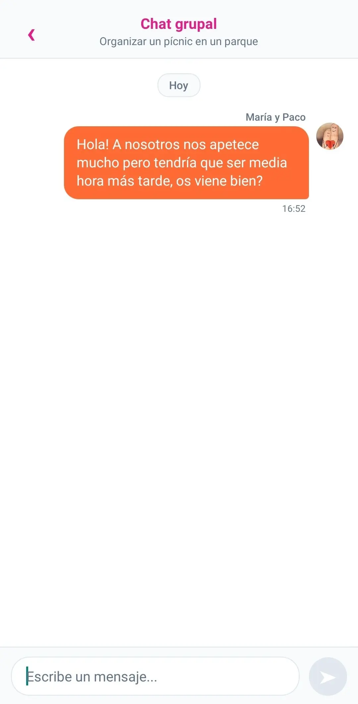

Cómo se usa MesaPara4
MesaPara4 es una app para parejas que quieren conocer a otras parejas creando y apuntándose a planes. Nada sexual ni erótico: está prohibido por los Términos de uso y se sanciona con un aviso y, si se repite, la expulsión definitiva de la app.

Inicio de sesión
Accedéis con el correo y la contraseña de la pareja. La cuenta pertenece a la pareja como unidad, no a una sola persona.

Inicio
El punto de partida principal de la app para acceder a todas las funcionalidades, novedades e interacciones principales.

Perfil
Vuestra ficha pública: foto, nombres, edades, ciudad de origen, bio y fondos de pantalla. Es lo que verán las demás parejas.

Insignias
Desde vuestro perfil, un panel con vuestro progreso: 9 insignias que subís de nivel según usáis la app en pareja. La última insignia esconde un regalo sorpresa: una pareja legendaria se merece un premio legendario.

Ajustes
Notificaciones, información legal y, si algún día queréis marcharos, la baja de la cuenta.

Buscar plan
Por lista o por mapa, con o sin filtros. Encontrad planes cerca de vosotros, en la fecha que os venga bien.

Crear plan
Elegid lugar, fecha y una breve descripción. Estableced el rango de edad y el número de parejas que se pueden apuntar al plan. También tenéis ejemplos de planes por si os falta inspiración.

Vuestros planes
Todos los que habéis creado o a los que os habéis apuntado: disponibles, completos, pasados o cancelados.

Detalles del plan
Toda la información de un plan concreto: lugar, fecha, quién se ha apuntado y acceso directo al chat. También podéis ver desde aquí los detalles de la pareja creadora del plan.

Ficha de pareja
Antes de quedar, podéis ver el perfil público de la otra pareja desde el plan.

Chat
Un chat grupal con la/s otra/s pareja/s para cuadrar los detalles antes de quedar.
Las insignias, una a una
Cada insignia tiene 3 niveles: empieza en turquesa, sube a dorado y llega al degradado de marca en su nivel máximo. Conseguir las 9 al máximo nivel desbloquea la insignia especial "Pareja Legendaria".
Organizadores
Por crear planes y realizarlos.
Extravertidos
Por apuntaros a planes de otras parejas y acudir a ellos.
Reincidentes
Por repetir plan con la misma pareja.
Sociables
Por conocer a muchas parejas distintas.
Embajadores
Por invitar a otras parejas a MesaPara4.
Viajeros
Por hacer planes en distintas provincias.
Fotógrafos
Por subir recuerdos con foto en los planes que hacéis.
Veteranos
Por vuestra antigüedad en la app.
Coleccionistas
Por conseguir insignias distintas.